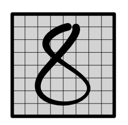

Machine Learning Engineering
Lecture 22
Convolution
Dates
Guest Lecture
Last Assignment...
Due December 2
Module 4
Lecture
Outline
Review: Images
Convolution
Channels
Images
Data Set

Data Labels
{kind=link}

Network

Three Challenges
How do we handle input features? (Convolution, 4.2)
How do we look at variable-size areas? (Pooling 4.3)
How do we predict multiple labels? (Softmax 4.4)
Challenge 1: Input Representation

Challenge 1: Input Representation

Lecture Quiz
Convolution
Challenge
How do we handle locality in features?
Example
Challenge 1: Input Features

Intuition
Same neural network as before
Brute force, run it everywhere
Hope to detect important patterns and combine them
Simplification
1D Line
1 Hidden
Convolution Forward

Computation
Output Values
output[0] = weight[0] * input[0] + weight[1] * input[1] + weight[2] * input[2]
output[1] = weight[0] * input[1] + weight[1] * input[2] + weight[2] * input[3]
output[2] = weight[0] * input[2] + weight[1] * input[3] + weight[2] * input[4]Alternative View
Unroll
input = minitorch.tensor([1, 2, 3, 4, 5, 6])
input = unroll(input, K)
print(input)
[[1, 2, 3],
[2, 3, 4],
[3, 4, 5],
[4, 5, 6],
[5, 6, 0],
[6, 0, 0],
]Alternative View
Unroll + zip + reduce
weight = minitorch.tensor([5, 2, 3])
output = (input @ weight.view(K, 1)).view(T)
print(output)
[18, ..., 30 ]Alternative View

Gradient
Output Values
output[0] = weight[0] * input[0] + weight[1] * input[1] + weight[2] * input[2]
output[1] = weight[0] * input[1] + weight[1] * input[2] + weight[2] * input[3]
output[2] = weight[0] * input[2] + weight[1] * input[3] + weight[2] * input[4]Gradient values
grad_input[2] = weight[0] * grad_output[2] + weight[1] * grad_output[1] + weight[2] * grad_output[0]Conv Back - Input
Reverse the convolutional anchor

Gradient of Weight
Output Values
output[0] = weight[0] * input[0] + weight[1] * input[1] + weight[2] * input[2]
output[1] = weight[0] * input[1] + weight[1] * input[2] + weight[2] * input[3]
output[2] = weight[0] * input[2] + weight[1] * input[3] + weight[2] * input[4]Gradient values
grad_weight[2] = grad_output[0] * input[2] + grad_output[1] * input[3] + grad_output[2] * input[4]Conv Back - Weight

Channels
Intuition
Each position may have multiple values
These may be meaningful - i.e. color channels
These may be learned - i.e. hidden states
Key Points
Convolution is a Linear applied to all channels in position
If weight is length K and there are 10 channels, the input to the linear is 10 * K.
Output channels are just like the output of the Linear.
Graphical Representation

Mathematical View
Code (note matmul on in_channels * K)
input = minitorch.rand(in_channels, T)
weight = minitorch.rand(out_channels, in_channels, K)
input = unroll(input, K).permute(1, 2, 0)
output = (weight.view(out_channels, in_channels * K) @ input.view(in_channels * K, T))Implementation
All about understanding sizes.
Should be similar to matmul, start with output
If outside boundaries, use 0
Applications
1D convolution is very highly used
NLP

Speech Recognition